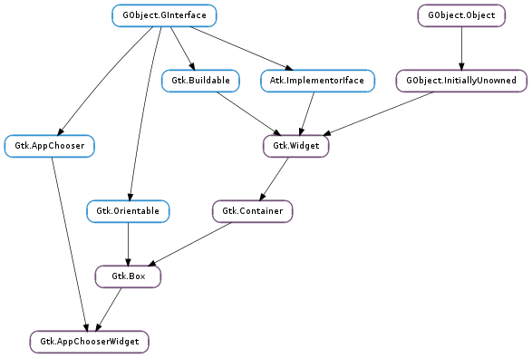

| static | new(content_type) |
| get_default_text() | |
| get_show_all() | |
| get_show_default() | |
| get_show_fallback() | |
| get_show_other() | |
| get_show_recommended() | |
| set_default_text(text) | |
| set_show_all(setting) | |
| set_show_default(setting) | |
| set_show_fallback(setting) | |
| set_show_other(setting) | |
| set_show_recommended(setting) |
| Name | Type | Flags | Description |
|---|---|---|---|
| default-text | str | r/w | The default text appearing when there are no applications |
| show-all | bool | r/w | Whether the widget should show all applications |
| show-default | bool | r/w | Whether the widget should show the default application |
| show-fallback | bool | r/w | Whether the widget should show fallback applications |
| show-other | bool | r/w | Whether the widget should show other applications |
| show-recommended | bool | r/w | Whether the widget should show recommended applications |
| Name | Parameters | Return | Description |
|---|---|---|---|
| application-activated | Gio.AppInfo | Emitted when an application item is activated from the widget’s list. This usually happens when the user double clicks an item, or an item is selected and the user presses one of the keys Space, Shift+Space, Return or Enter. | |
| application-selected | Gio.AppInfo | Emitted when an application item is selected from the widget’s list. | |
| populate-popup | Gtk.Menu, Gio.AppInfo | Emitted when a context menu is about to popup over an application item. Clients can insert menu items into the provided Gtk.Menu object in the callback of this signal; the context menu will be shown over the item if at least one item has been added to the menu. |
Bases: Gtk.Box, Gtk.AppChooser
Gtk.AppChooserWidget is a widget for selecting applications. It is the main building block for Gtk.AppChooserDialog. Most applications only need to use the latter; but you can use this widget as part of a larger widget if you have special needs.
Gtk.AppChooserWidget offers detailed control over what applications are shown, using the Gtk.AppChooserWidget :show-default, Gtk.AppChooserWidget :show-recommended, Gtk.AppChooserWidget :show-fallback, Gtk.AppChooserWidget :show-other and Gtk.AppChooserWidget :show-all properties. See the Gtk.AppChooser documentation for more information about these groups of applications.
To keep track of the selected application, use the Gtk.AppChooserWidget ::application-selected and Gtk.AppChooserWidget ::application-activated signals.
| Parameters: | content_type (str) – the content type to show applications for |
|---|---|
| Returns: | a newly created Gtk.AppChooserWidget |
| Return type: | Gtk.Widget |
Creates a new Gtk.AppChooserWidget for applications that can handle content of the given type.
| Returns: | the value of Gtk.AppChooserWidget :default-text |
|---|---|
| Return type: | str |
Returns the text that is shown if there are not applications that can handle the content type.
| Returns: | the value of Gtk.AppChooserWidget :show-all |
|---|---|
| Return type: | bool |
Returns the current value of the Gtk.AppChooserWidget :show-all property.
| Returns: | the value of Gtk.AppChooserWidget :show-default |
|---|---|
| Return type: | bool |
Returns the current value of the Gtk.AppChooserWidget :show-default property.
| Returns: | the value of Gtk.AppChooserWidget :show-fallback |
|---|---|
| Return type: | bool |
Returns the current value of the Gtk.AppChooserWidget :show-fallback property.
| Returns: | the value of Gtk.AppChooserWidget :show-other |
|---|---|
| Return type: | bool |
Returns the current value of the Gtk.AppChooserWidget :show-other property.
| Returns: | the value of Gtk.AppChooserWidget :show-recommended |
|---|---|
| Return type: | bool |
Returns the current value of the Gtk.AppChooserWidget :show-recommended property.
| Parameters: | text (str) – the new value for Gtk.AppChooserWidget :default-text |
|---|
Sets the text that is shown if there are not applications that can handle the content type.
| Parameters: | setting (bool) – the new value for Gtk.AppChooserWidget :show-all |
|---|
Sets whether the app chooser should show all applications in a flat list.
| Parameters: | setting (bool) – the new value for Gtk.AppChooserWidget :show-default |
|---|
Sets whether the app chooser should show the default handler for the content type in a separate section.
| Parameters: | setting (bool) – the new value for Gtk.AppChooserWidget :show-fallback |
|---|
Sets whether the app chooser should show related applications for the content type in a separate section.
| Parameters: | setting (bool) – the new value for Gtk.AppChooserWidget :show-other |
|---|
Sets whether the app chooser should show applications which are unrelated to the content type.
| Parameters: | setting (bool) – the new value for Gtk.AppChooserWidget :show-recommended |
|---|
Sets whether the app chooser should show recommended applications for the content type in a separate section.